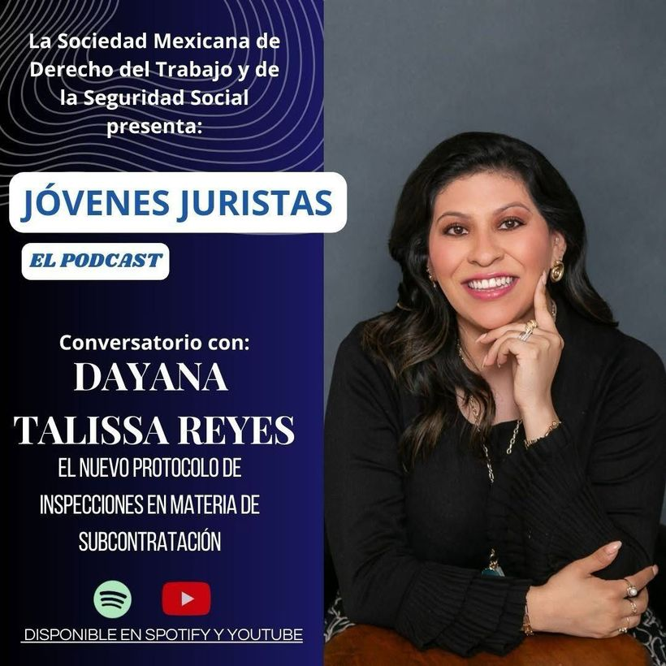

Sección de Jóvenes Juristas de la Sociedad Mexicana de Derecho del Trabajo y de la Seguridad Social
Nuevo Protocolo de Inspección en Materia de Subcontratación
Conversatorio sobre el nuevo protocolo de inspección aplicable en materia de subcontratación laboral. Disponible en Spotify y YouTube.